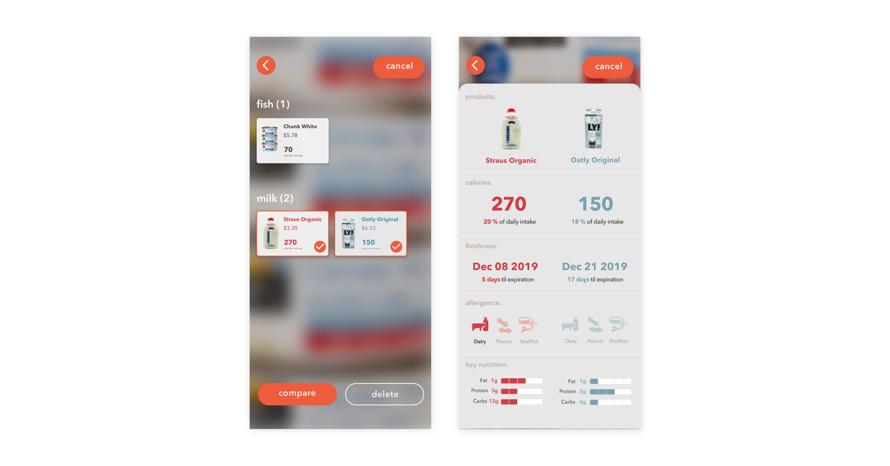
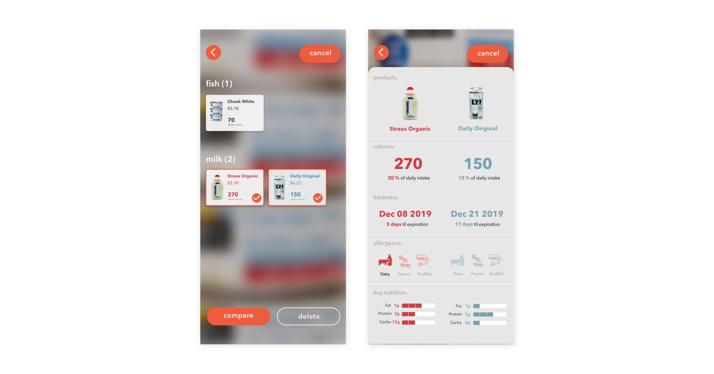

Universal label for everyone?
Allergies, diets, body types and several other considerations affect the way we select and purchase food everyday. However, homogenous nutrition labels on food packaging, which is the primary touchpoint of information, can be limited to individual needs. With the power of augmented reality, an interactive experience that enhances the real-world environment using computer-generated information, we designed an experience that expands the capabilities of food labeling and personalizes people’s grocery experience.
Challenges
How can we enhance the grocery shopping experience for people with dietary needs?
This project was inspired by friends who voiced their frustrations for comparing products and exploring new products. It is difficult for people who have allergies and other dietary restrictions especially to find a product that would fit their needs, and sometimes these important information are hidden in the complicated food labels and packagings.
How can we address the growing food traceability concern?
Being able to identify the origin of food products, from the farm through processing plants to retail, has been a persistent concern for general consumers in the U.S. While traceability information can be complex and hard to digest, new technologies such as augmented reality could open up whole new ways to tell the story of our food.
Outcome
With augmented reality, WholeStory expands the capabilities of food labeling by customizing them towards each person’s dietary needs and educating users with food traceability information.
Set up personal profile
Being able to identify the origin of food products, from the farm through processing plants to retail, has been a persistent concern for general consumers in the U.S. While traceability information can be complex and hard to digest, new technologies such as augmented reality could open up whole new ways to tell the story of our food.
Brainstorming

To assess the feasibility of the ideas, we placed them on an impact/effort matrix. The first idea is the quickest improvement to the current system. However, the cons is that it takes away from the in-store experience and therefore it has less impact. The information kiosk would get more uses since it is installed in the store and puts less effort on the user side, however, this would be much more effort on the store side. AR Label is a good balance between the two. Although it would require some user effort to set up the app beforehand, the AR capabilities allows users to see both their personalized information as well as the original packaging in-context.


 
